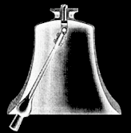

מערכת יפה ופשוטה שבה מופיעה התנהגות דטרמיניסטית כאוטית היא מטוטלת כפולה. למטוטלת רגילה מחברים מטוטלת נוספת. ההתנהגות של המערכת בטווח הארוך רגישה מאד לתנאי ההתחלה בעת שחרור המטוטלת: במילים אחרות, התנהגות זו תלויה באורכים, במסות ובמיקומים המדויקים של המטוטלות.
בחלון שמימין תוכלו להתנסות באורכים ובמיקומים שונים של המטוטלות ברגע ההתחלה. לחיצה על הלחצן trace (עקיבה) גורמת להופעת עקבות של תנועת קצה המטוטלת השנייה, כך שתוכלו לעקוב אחריה ביתר קלות. תוכלו גם לשנות את הכיוון ואת העוצמה של כוח המשיכה הפועל על המערכת.
|  |
השילוב של פעמון כנסייה והענבל הנע בחופשיות בתוכו
יוצרים מערכת של מטוטלת כפולה.